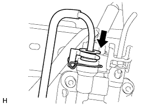

КОМПРЕССОР РЕГУЛИРОВКИ ВЫСОТЫ ПОДВЕСКИ > УСТАНОВКА |
| 1. УСТАНОВИТЕ КОМПРЕССОР РЕГУЛИРОВКИ ВЫСОТЫ ПОДВЕСКИ КРОНШТЕЙН |
Установите кронштейн компрессора регулировки высоты и закрепите его 3 болтами.
| 2. УСТАНОВИТЕ КОМПРЕССОР РЕГУЛИРОВКИ ВЫСОТЫ ПОДВЕСКИ В СБОРЕ |
Установите 3 втулки на компрессор регулировки высоты.
Установите новое уплотнительное кольцо.
Установите осушитель системы регулировки высоты и закрепите его болтом.
Установите компрессор регулировки высоты на кронштейн и закрепите его 3 болтами.
Подсоедините разъем.
Закрепите зажим.
Установите 3 зажима.
Подсоедините разъем.
Закрепите трубку регулировки высоты № 2.
| 3. ПОДСОЕДИНИТЕ ТРУБКУ РЕГУЛИРОВКИ ВЫСОТЫ № 2 |
|  |
Подсоедините трубку регулировки высоты № 2 (Нажмите здесь).
| 4. УСТАНОВИТЕ ФИЛЬТР СИСТЕМЫ РЕГУЛИРОВАНИЯ ВЫСОТЫ ПОДВЕСКИ |
Установите фильтр системы регулировки высоты и закрепите его 2 болтами.
Подсоедините 2 шланга и закрепите их 2 новыми фиксаторами.
| 5. ПРОВЕРЬТЕ ТРУБНЫЕ СОЕДИНЕНИЯ НА УТЕЧКУ ВОЗДУХА |
Проверьте трубные соединения на наличие утечки воздуха (Нажмите здесь).
| 6. УСТАНОВИТЕ ЛЕВУЮ ЗАЩИТУ ЗАДНЕГО БАМПЕРА В СБОРЕ (для 5-дверных моделей) |
Установите защиту заднего бампера и закрепите ее винтом.
| 7. УСТАНОВИТЕ КРЫШКУ КОМПРЕССОРА РЕГУЛИРОВКИ ВЫСОТЫ ПОДВЕСКИ |
Установите крышку компрессора регулировки высоты подвески и закрепите ее 3 новыми фиксаторами.
| 8. УСТАНОВИТЕ БРЫЗГОВИК ЛЕВОЙ ЗАДНЕЙ БОКОВОЙ ПАНЕЛИ |
Установите брызговик задней боковой панели и закрепите его 5 винтами и 2 фиксаторами.
| 9. УСТАНОВИТЕ ЛЕВОЕ ЗАДНЕЕ КОЛЕСО |
| 10. ПОДСОЕДИНИТЕ ПРОВОД К ОТРИЦАТЕЛЬНОМУ ВЫВОДУ АККУМУЛЯТОРНОЙ БАТАРЕИ |